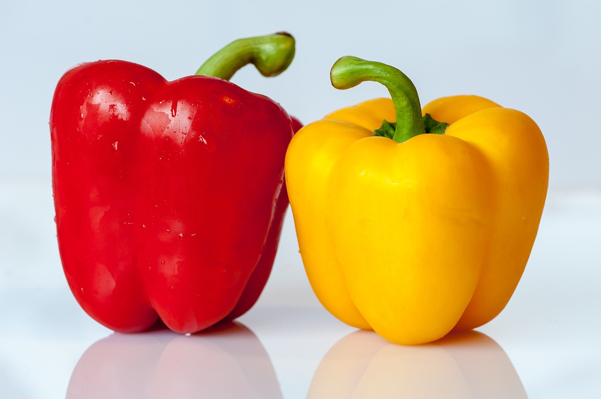
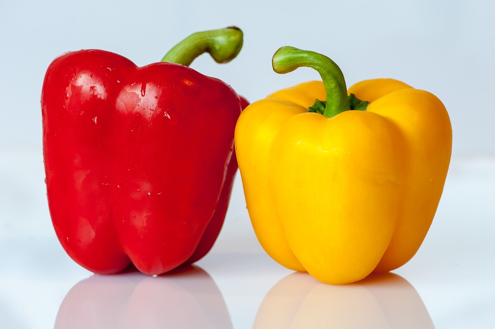

Kip met currysaus
Kipcurry is een smaakvol en aromatisch gerecht dat wereldwijd populair is, vooral in de Indiase en Zuidoost-Aziatische keukens. Het bestaat meestal uit malse stukken kip, gekookt in een rijke en kruidige saus op basis van kruiden zoals kurkuma, komijn, koriander en garam masala, gecombineerd met kokosmelk of tomaten om de saus een volle, romige textuur te geven. Afhankelijk van het recept kan de curry mild of pittig zijn, en het wordt vaak geserveerd met rijst of naanbrood om de saus op te nemen.
Ingridiënten
- 300gr kipfilet
- 1 ui
- 1 teen knoflook
- 200ml kokosmelk
- 100ml bouillon (kip)
- 200gr prei
- 1 el gembersiroop
- 1 paprika
- 200gr witte rijst
- 1 tl kerriepoeder
- 1 tl paprikapoeder
- zout en peper
Recept
- Kook de rijst volgens de instructies op het pak.
- Snipper de ui en snijd de knoflook fijn.
- Maak de prei schoon en snijd de prei en paprika in stukjes.
- Snijd ook de kipfilet in stukjes en bestrooi met zout en peper.
- Giet een scheutje olie in een hapjespan of wokpan en bak de kipfilet rondom bruin.
- Voeg daarna de ui, knoflook en de kruiden toe. Bak dit 2-3 minuten.
- Voeg daarna de prei en paprika toe.
- Bak dit een paar minuten mee en voeg dan bouillon, gembersiroop en kokosmelk toe.
- Breng dit aan de kook en laat een minuut of 15 zachtjes pruttelen totdat het een beetje ingekookt is en de saus wat dikker is.
 
